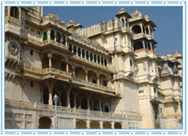

Udaipur
City Palace is one of the architectural marvels of Rajasthan, located
peacefully on the banks of Lake Pichola. This majestic City Palace is
the most-visited tourist attraction of Udaipur and often distinguished
as the largest palace complex in Rajasthan. Initially, Maharana Udai
Singh built this superb wonder, but the present form of the Palace is
the result of subsequent additions by his successors.
City Palace boasts of the wonderful blend of Medieval, European and
Chinese Architecture. The Palace has various towers, domes and arches,
which add to the flavor of heritage site. Towering on the banks of
Pichola Lake, City Palace is truly a feast to the eyes. City Palace is a
marvelous assortment of courtyards, pavilions, terraces, corridors,
rooms and hanging gardens. Encircled by fortifications, this imposing
Palace is wholly built in granite and marble.
City Palace has several gates that are known as "Pols". 'Bara
Pol' (Great Gate) is the main gate to the City Palace complex that will
take you to the first courtyard. On passing 'Bara Pol', you will come
across a triple arched gate, which is known as 'Tripolia'. Between these
two gates, you would see eight marble arches or Toranas, where Kings
used to weigh themselves with gold and silver. Besides Tripolia, there
is an arena where elephant fights were staged. Across 'Tripolia', you
would enter the 'Elephant Gate' or the 'Hathi Pol'.
City Palace comprises 11 wonderful palaces, which were built by
different rulers still they resemble each other. With the sheer glimpse
of unique paintings, antique furniture and exquisite glass mirror &
ornamental tiles work of these palaces, you will get amazed. Manak Mahal
(Ruby Palace) has figures of crystal and porcelain. However, Bhim Vilas
flaunts a fabulous collection of miniature paintings depicting the real
life stories of Radha-Krishna.
The 'Krishna Vilas' is known for the noteworthy album of miniature
paintings portraying royal processions, festivals and games of the
Maharanas. Moti Mahal (Pearl Palace) is celebrated for its lavish decor
while Sheesh Mahal (Palace of mirrors) is known for its breathtaking
mirror work. 'Chini Chitrashala' is renowned for its Chinese and Dutch
ornamental tiles. 'Dilkusha Mahal' (Palace of Joy) is known for the
murals and wall paintings.
Bada Mahal is the exotic garden palace that stands erect on a 90 feet
high natural rock formation. Rang Bhawan is the palace that used to
contain royal treasure. There are temples of Lord Krishna, Meera Bai and
Shiva, located right to the 'Rang Bhawan'. 'Mor Chowk' has exceptional
glass mosaics of peacocks, set in the walls presenting the three seasons
of summer, winter and monsoon. 'Laxmi Vilas Chowk' is an art gallery
with a distinctive collection of Mewar paintings.
Situated in the premises of City Place complex, Jagdish Temple is the
biggest and most beautiful temple of Udaipur. This temple Appeals to the
aesthetic sense of the people and we will further discuss it in our
other section. You can also trace a Shrine of Dhuni Mata in the complex
of City Palace. This part is considered as the oldest part of the Palace
where a sage passed his life meditating here.
In 1974, a part of the City Palace and the 'Zenana Mahal' (Ladies
Chamber) have been transformed into a museum. The museum is open for
public and we have discussed it in our other section about museums. One
can locate some striking paintings in the 'Zenana Mahal' which further
leads to Lakshmi Chowk. 'Lakshmi Chowk' is a beautiful white pavilion.
In City palace, the most captivating sight can be viewed from the towers
and terraces of 'Amar Vilas' from where you can get a breathtaking view
of Lake Pichola.
'Amar Vilas' is the highest point of this Palace and has wonderful
hanging gardens with fountains, towers and terraces. City Palace is
structured in a way that it offers a splendid view of the lake from all
its Balconies, cupolas and towers. Unlike the craggy exterior, City
Palace has amazing interiors with delicate mirror-work, marble work,
murals, wall paintings, silver work, inlay work and surplus of colored
glass. The exquisite work of City Palace cannot be bounded in words, so
one must visit this palace to capture the real picture of it.
Udaipur City Palace is the most-visited tourist attraction of Udaipur. Read more about City Palace of Udaipur, Rajasthan.
City Palace Udaipur
| Location: | On the banks of Lake Pichola |
| Built by: | Started by Maharana Udai Singh, completed by his successors |
| Built in: | Started in 1559 - till 18th century |
| Highlights: | Largest palace complex in Rajasthan |